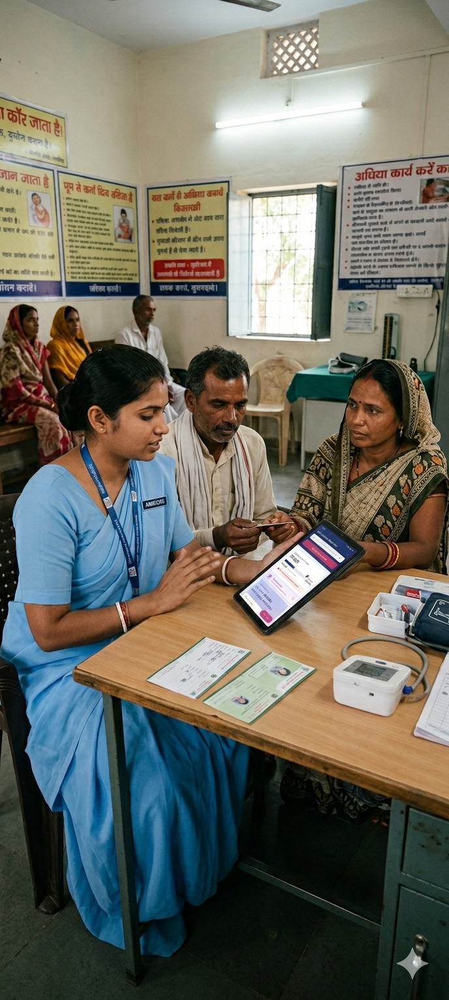

Bridging the Care Gap:
AI-Driven Product Design for Rural Healthcare

How can AI help with handling health screenings in rural India?
The central design question driving this sprint
About the Client
National NCD Portal
National NCD Portal is a digital initiative built to help healthcare workers screen & manage patients with NCDs with the primary objective of providing continuum of care to every Indian — with a special focus on rural India.
The goal: integrate AI capabilities with National NCD Portal to make users' workflow smoother and more effective across the country's rural healthcare infrastructure.
Context
How the rural healthcare system works
Healthcare in rural India operates through a tiered system with 3 major levels, each serving a different scope of the population.
Tier 1
Community Health Centres
CHC
Tier 2
Primary Health Centres
PHC
Tier 3
Sub-Health Centres
SC

The main players across these tiers:
 ASHA
ASHA
 ANM
ANM
 CHO
CHO
 MO
MO
Primary User
The CHO — Chief Health Officer
CHOs constitute around 80% of NCD app users, conducting a wide range of tasks on the app — making them the highest-impact target for AI integration.
- Screen people for NCDs & Cancers
- Record RBS & BP for everyone and do follow-ups for diagnosed beneficiaries
- Refer patients to doctors when required
- Handle a wide range of admin & reporting tasks on the app

Their end-to-end journey covers four key phases:
Reporting
Process
The Design Sprint
A structured sprint with the Dell NCD team to identify the highest-value AI opportunities and design viable concepts for the existing platform.
Introduction & Setting the vision
Walkthrough of CHO Journey
2-year goal setting
Pain points & Desires for CHOs
Prioritising Problems to Solve
AI Ideation with cards
Concept Generation
Technical & Ethical Considerations
Prioritising Concepts to Design


Vision
2-Year Goals
The sprint aligned on three north-star outcomes for what the NCD platform would look like two years out.
Tech interactions will be invisible — data capture happens seamlessly in the background
Patients will self-screen; CHOs will review and validate rather than manually record everything
NCD app will identify anomalies and support more informed decisions for better patient outcomes

Output
AI Solutions Designed
Four AI-powered capabilities were identified, designed and applied to the existing NCD Portal platform.
Task Prioritisation
AI prioritises tasks based on patient criticality — so CHOs always focus on the highest-risk cases first.

Profile Summaries
AI provides instant beneficiary profile summaries, reducing manual scrolling and information overload.

Voice-to-Form
AI transcribes voice input and auto-fills forms — removing the burden of manual data entry in the field.

Personalised Counselling
AI suggests personalised counselling scripts for CHOs based on individual patient history and conditions.